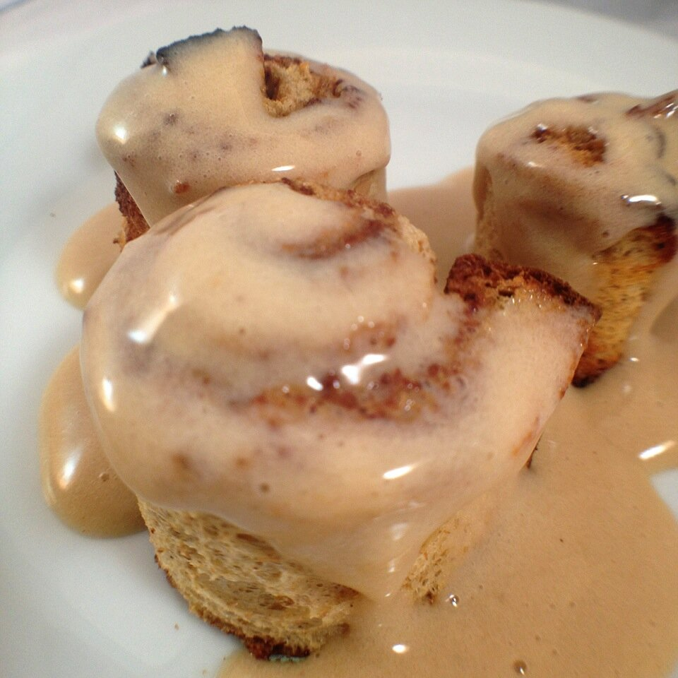

High Protein Cinnamon Rolls
So. I had been wanting to try the p28 high protein bread and p28 high protein flatbread for quite some time now. The shipping is expensive though and I wasn't sure if it'd be worth it. I kept hearing great things about it though so I finally committed to purchasing a pack of each.I'm soooo glad I did! These were so good. I love that they crisped up up but stayed perfectly nice and gooey on the inside! Yusssss.

High Protein Cinnamon RollsServes: 1Cinnamon Rolls
- 1 slice of high protein p28 bread
- 2 TBSP sugar free syrup
- 1/4 tsp cinnamon
Maple Vanilla Protein Glaze
- 1 TBSP vanilla whey protein
- 1 TBSP sugar free syrup
- 1 TBSP unsweetened almond milk
First, slice the bread into 3 long strips. Flatten and stretch it as much as you can. Gently! Mix the sugar free syrup with cinnamon and spread this along the top of the strips. Roll each strip up and put a toothpick through them. Place them on a sprayed baking sheet at bake at 350F for 6-8 mins (until lightly browned). Remove the toothpick from each cinnamon roll.
Make the protein glaze by mixing the whey protein, sugar free syrup, and unsweetened almond milk. Drizzle on top of your cinnamon rolls!